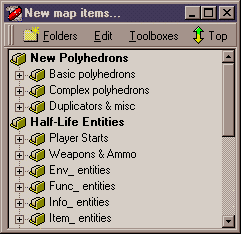
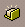
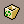
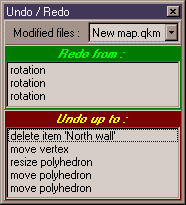
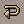
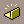
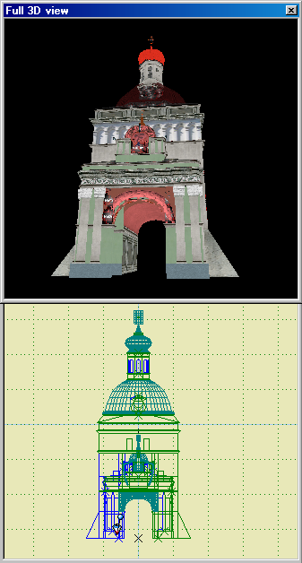

Misc tools
Updated 20 Dec 2007
- QuArK Information Base
- 1. Introduction to QuArK
- 1.5. Map-editor in QuArK
|
|
Misc tools
Updated 20 Dec 2007
|
Upper levels: - QuArK Information Base - 1. Introduction to QuArK - 1.5. Map-editor in QuArK |
|
1.5.6. Misc tools |
[ - - ] |
|
Index |
|
New map item |
Decker - 28 Feb 2001 | [ Top ] |
|
  Opens the new map items window, in where you will find many different objects, usefull when creating a map. This window contains all objects thats possible to use in the map-views and dataform-display. The top-folders, also known as main-folders, are here marked in bold. Some of these folders might come from add-ons, others are somewhat static. You can drag objects from here, and drop them on the 'Userdata panel', so you will have quicker access to them. It is highly recommended that you familiarize yourself with these items, for the FPS-game you are building a level for. There might be prefabs here, which you installed with an add-on. See how you install add-ons in the QuArK Explorer. |
|
Trashcan |
Decker - 28 Feb 2001 | [ Top ] |
|
 Useful to delete an object from the 'Userdata panel'. Just drag and drop it in the trashcan. |
|
Undo/Redo |
Decker - 28 Feb 2001 | [ Top ] |
|
  The icon will open up the undo/redo display. Redo Click on the entry, from where you want to redo. Notice you can't do a selective redo-selection. Its all or nothing. Undo Click on the entry, from where you want to undo. Notice you can't do a selective undo-selection. Its all or nothing. |
|
New group |
Decker - 24 Mar 2003 | [ Top ] |
|
 Creates a new group in the tree-view, where you can place other objects in, so they are neatly grouped together. Once you have created a group, you can keep your mouse-cursor in the dataform display, mark the group and press F2 to rename it. |
|
Templates |
cdunde - 20 Dec 2007 | [ Top ] |
|
This is a very powerful tool that also has its own functions and setting in QuArK and because of this, even though they are somewhat like prefabs, require its own section to help inform you of their configuration and functionality features. What are templates : Basically a template can be any QuArK .qkm map (work) file that can consist of a single poly, entity, bezier, group or anything else QuArK has to offer. The .qkm map file can also consist of an entire map full of these kinds of items as well. How to setup templates : First you must select a location folder to store the .qrk map files you wish to use as templates. This is done by going to the Games Configuration section for each game that you want to have templates for and select a location folder for that game. Until that is done you will not be able to use any templates. You can have as many .qrk map files in that folder as you wish. Other things can also be done with the folder setting as well as the files them selves. Once a folder location has be set then these are the steps that can take place:
Once registered you will see that list of template files on the New map items... list. Double clicking on a template will place it into the map you are currently editing. If you completely close QuArK and restart it again, a small blue box icon will also be placed in the area above the Compass that you can click on for quick access to your templates.  As you can see in the screen shot to the right, a template can become very detailed, and this is just a small example. How to use templates : Individual items in a template can not be changed in the edited map file. However, if a template is Dissociated within the edited map file, by doing a RMB click over the template in the tree-view and selecting Dissociate Duplicator images from the popup menu, every part of that template will be reconstructed as individual items and can then be changed within that edited map file. Once a template is Dissociated it can not be replaced back as a template. If several templates are used within a group folder all of those templates can be Dissociated at the same time by doing a RMB click over the group folder, selecting Edit then Dissociate Duplicator images from its popup menu. You can also Dissociated individual templates within that group folder as described above. Template Specifics/Args :
Making templates : 1) Start a New map in QuArK. You can save that new map, naming it anything you wish, now or later as either a Hand editable or regular .qkm file. It can be saved any place you wish, but to work, you must have it in the Directory of Templates folder you selected for your template .qkm files to be located for that game. 2) Now create any objects you wish to have in that template map using any of the items that QuArK has to offer and that game can use such as polys, entities, lights, monsters, weapons, beziers, even other templates. You can also do your special flag settings in this map as well as apply your textures and position them. 3) This is where organization takes place. The map .qmk file you are working on actually becomes a Library of templates if you wish. Either way you MUST have at least one Group folder in which you place some or all of the items in that map. You can have several Group folders, placing objects in different ones. 4) Rename all Group folders to anything you wish. Clicking on a Group folder and then going to its Specifics\Arg page you can enter a Description for that folder. Later, you will see that each folder will become a Template and its Description will appear in the New map items... when you open this Library that is listed there. 5) Not critical but a helpful thing is adding a usercenter for that group.
The usercenter is used as a point of rotation/scale operations of the group.
For example:
For a wall lantern - it's better that the usercenter is set at the base of a wall. 6) Now save your file, click on your Commands menu function Build templates list, then register that list and you're done!
Refresh Template : Using the Refresh Template function is not always necessary, simply by moving something in the tree-view or any object in one of the editor's views will also update any templates that have changed. Templates list rebuild & placement : As far as the placement of those .qkm template library files, that can even be in one single folder that you can use for all of the games you map for. Which means you can pass those templates from one game to the next. The only thing to remember about doing that is to be sure you do not use entities that will not work in another game and that you add all of the textures you use to the Texture Browser by creating links to those textures or importing them into a CustomTextures.qrk file and adding that file to your addons for each game you want to use them in. |
|
Copyright (c) 2009, GNU General Public License by The QuArK (Quake Army Knife) Community - http://quark.sourceforge.net/ |
[ - Top - ] |